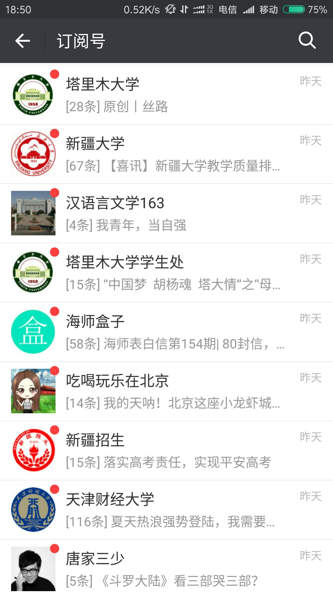
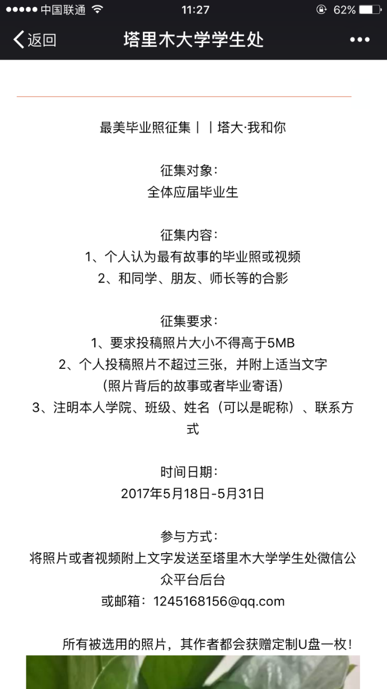
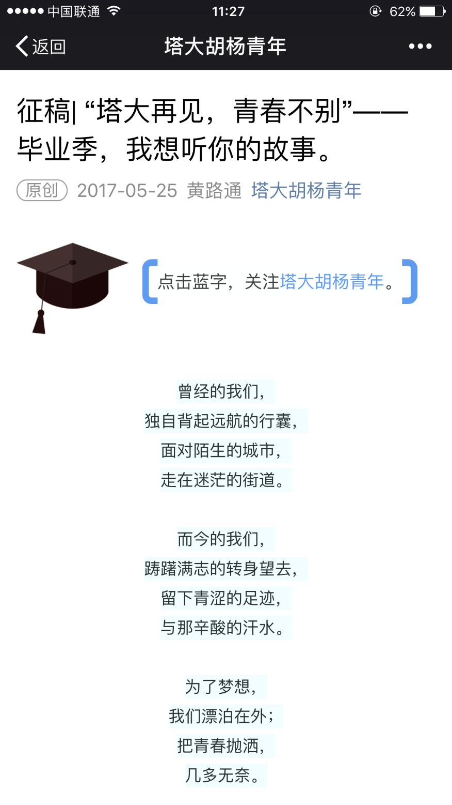

这是机械19的李磊微信订阅号的截图。因为工作学习和个人兴趣，他关注的微信公众号达到86个，但他表示几乎不会去点开那些微信平台的推送，“关注的公众号很多，但是因为学习时间，所以很少打开”。
公众号泛滥，现象丛生
“现在微信公众号太泛滥了，每个人都可以有自己的个人公众号”杨亚东一语中的。
只要“量”不要“质量”。
作为新媒体之人，一味的追求文章的点击率，不求文章的质量，校园微媒体也存在这种问题。校内的官方微信虽然不以营利为目的，但是为了达到一定的宣传效果，而忽略了“质”的问题。
为了能够增加文章点击率，运营者都会精心为文章标题想一个博人眼球的题目，俗称“标题党”。人文学院编辑部部长李翔针对这个问题曾几次向部门干事进行开会。她表示现在的校园微信内容可看性太差，没有实质有用的内容。“几张图片和简短的文字就凑成了一篇稿子。”
转载 套用模板 复制粘贴
还有校内微媒体存在的普遍问题就是：存在内容原创性不足的问题。学校的微媒体以素材编辑推文或者转载其他公众号文章的形式发布推送。
机电院俞天汝作为“机电微映像”运营者表示，为了完成每天的推送任务，我们有时候会去转载网上的一些文章。转载，套用模板，复制粘贴是微信公众号最常走的三大捷径。
同质化难题
纵观校内不同微媒体针对某一事件的推送几乎一模一样，如军训推文，毕业季推文等。
例如正值毕业季来临，校内多家微媒体都进行了选题策划，但是内容都大同小异，塔里木大学学生处和塔大胡杨青年差不多在同一时间段推出了关于毕业的相同话题，这样明显失去了个性，减少了读者的可读性。


内容单一，媒体缺乏生命力。
纵观人文学院微信，每天推送的东西大部分是新闻，其次是转载网络心灵鸡汤，只有一小部分来自学生的原创作品。
校园微信的稿件除去运营者本身的策划选题之外，其次都是是来自校内学生的原创稿件，而这部分的稿件大部分又来自于学校新闻专业的学生。稿件的来源渠道狭窄，内容单一，使得校园微信缺乏生命力。
“管理死板，政治性色彩浓厚，技术不够”
包括塔大官微近期的内容推送大可分为三部分：一为政治性文章，二为校园硬新闻，三为网络转载文章。（截图）
“官微管理死板，政治性色彩过于浓厚，运营人员技术掌握不够。”在提及关于官微存在的问题时，负责人之一郭同学这样说道。微信公众号主要服务于碎片化时间，其次受众大部分为学生。所以在微信之中，内容要求轻松好玩有趣，太严肃的内容没人看。郭春江表示“塔大官微关注的人很多，但是看的人很少。”
泛滥背后
据笔者了解，学生取消公众号的三个主要原因：原创作品太少，推送内容可读性不高，鸡汤，硬新闻较多。
校园微媒体出现这么多问题，是什么原因呢？
性质不同带来风险各异
在日益激烈的平台竞争中，为了体现自身平台的特色，保证文章的阅读量，运营者们在文章的内容上都花了不少心思。但读者的阅读欲并非是运营者们唯一考虑的因素，其次还要考虑微信平台本身的性质带来的风险。
在运营者之一、郭春江看来，相较于个人微信平台，“塔里木大学”官微发布的内容规定很严格，信息的发布也有一套严格的审核机制。“在官方背景下，你有很多东西不能做也不能说，选题有一定限制。”周同学表示个人微信平台的一个好处就是没有条条框框的限制。“可以满足自己的个人爱好，想写什么就写什么。”
相比学校官方微信，学院微信平台在选题上拥有一定的自主性，可以做一些比较自由的话题。但是也有一些运营者表示存在一些矛盾:一方面为了提高公众号的关注度和点击率，去策划一些参与度高且活泼生动的话题，另一方面作为学院官方微信，又要保持推送文章的严肃性。
专业能力不足
学院微信的负责人是各个学院的编辑部部长，全部来自学生。其运营团队是由学生组成，由于学生运营的原因，导致人员流动具有流动性，比如换届，比如老干事推出，新干事的加入……使得微信平台风格不一致，其次微信的稿件审核要求没有太大的要求。
除了人文学院微信平台有专业的新闻专业学生培训。其他学院的培训主要都是老干事对新干事进行培训，这就存在专业问题不足，导致学院微信内容出现许多问题。
内部管理出现问题
相比于学院的问题，塔大官微的问题更多的来源于其内部的管理机制。塔大官微由党委宣传部负责老师带队，微信后台运营团队都是来自人文学院新闻专业及汉语言专业的学生。但是因为负责老师不是专业老师，对于新媒体不是很了解，使得技术方面出现断层。
虽然运营人员有比较具体的人员分工，但是因为官微性质的原因，许多新奇的想法因为开放性原因而被否认掉，专业老师的培训并没有运用在实践操作上。
“有很多工作被压制”
选题受学校领导老师的干涉，强制要求把一些会议新闻，领导讲话，讲座等内容放在微信上，占据大量篇幅，留给运营人员自己发挥的空间很小，导致内容僵硬，与学生距离远。再加上最近后期团队的更换，团队经验不足，使得官微失去了原来的活力。再加上现在属于非常时期，政治性内容占据了微信大部分篇幅。包括塔大官微策划的固定栏目周末电台，因为政治性文章多次被推后在周一周二推送。
在运动会期间，塔大官微策划了有奖摄影活动，但是因为物资的问题，而中途夭折。“有很多工作被压制”。从热情到失去热情，这就是郭春江失去了运营官微热情的原因。看似塔大官微有严格的管理机制，在体制之内，反而滋生出许多问题。
如何发展，各寻出路
除了平台性质的限制和内容质量等问题，校园微信在运营过程中不得不面对其他一些问题：校内学生的需求难以满足，关注量增长缓慢等各种问题。这群校园“微”媒体人，不管是加强合作，还是孤军奋战，都需要积极探寻新的出路。
“伸出手”求合作
学院微信平台希望能够和彼此加强彼此之间的联系。就拿这次人文学院举办“放任飘洒，终成青春”原创诗歌大赛，就请了学校各个院的编辑部部长来参与诗歌的评选。这样加强了各院之间的交流。
在这个时代，重复并不是一件不好的东西，它可以使一些东西被更多的人看到。郭春江表示校内各个微信平台资源共享，增大宣传力度，提高传播速度。
不“借东风”
运营团队应该注重微信公众号推送内容的真实性、原创性以及可读性。在充斥着大量碎片化信息的时代，校内微媒体更应该注重推文的质量，才能留住更多的读者。例如策划一些参与度高的话题，推行投稿的方式，线上线下双向互动，在加强提升与读者的互动，也提高推送文章的数量与质量。
校媒同质化的今天，如何以读者为中心回归内容。最重要的是如何形成自己公众号独特的风格，而不是一味的“借东风”。只有这样，才能在如今泛滥的公众号里占有一席之地。
“放手”去做
让学生放开手来做校园微信，最根本的是优化现有混乱的管理机制。
校园微媒体旨在服务校内师生，而学生是官微的主要受众。既要保持一种严肃性，又不能失去活泼性。一个媒体如何长久发展，就是要如何留住读者。塔大官微作为学生的实践平台，应该给学生更大的发挥空间，让他们发挥自己的创意，和想法，同时给予物资的支持。
无论微媒体如何发展，如果读者已经对其失去了兴趣，那么它将必然走向衰落。所以让学生放手去做，何尝不是一种挑战呢。